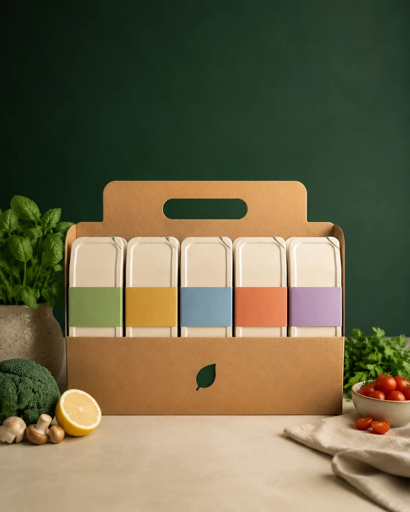

Весь рацион на день уже собран.
Пять приёмов пищи, подробный состав каждого блюда и один понятный комплект. STIMUL FOOD снимает повторяющуюся задачу «что поесть сегодня» — без обещаний чудес и без лишнего выбора.

Пять решений превращаются в одно.
Распределение по времени — пример, а не обязательная схема. Главное: каждый приём пронумерован, меню известно заранее, а состав можно открыть до заказа.
Время показано как пример распределения приёмов пищи и не является медицинской рекомендацией.
Не «сбалансировано». А посчитано и показано.
По каждому блюду доступны калории, белки, жиры, углеводы, выход готового блюда, ингредиенты и аллергены. Значения пока расчётные и уточняются после контрольной производственной проработки.
КБЖУ рассчитано по текущей рецептуре. Финальные значения могут уточняться после контрольной готовки и фиксации фактического выхода.

Не контейнер. Готовый рабочий день.
Цена воспринимается иначе, когда видно объём результата: пять приготовленных приёмов, примерно 1,6 кг еды, маркировка, сборка и понятная последовательность на день.
Все 14 дней доступны до заявки.
Ингредиенты и граммовка по каждому блюду.
Фильтр работает по текущей рецептуре.
Вместо пяти отдельных решений в течение дня.
Какую часть вашего дня закрывает ~1600 ккал?
Калькулятор даёт контекст, а не диагноз. Он использует формулу Миффлина — Сан-Жеора и коэффициент активности для приблизительной оценки энергозатрат.
Не является медицинской рекомендацией и не обещает изменение веса.
Начать можно с одного дня.
Пакеты уменьшают цену дня. Отдельный первый пробный день имеет собственную цену и не складывается со скидками пакетов.
Контроль важнее красивой этикетки.
Часть производственных параметров ещё должна пройти контрольную проработку. Поэтому мы разделяем то, что уже рассчитано, и то, что будет утверждено перед коммерческим запуском.
Проверка сырья, срока годности и соответствия текущей рецептуре.
Фактический выход фиксируется после контрольной готовки.
Проверяется целостность и соответствие этикетки партии.
Финальные режимы утверждаются технологом по фактическому процессу.
Стандартизация — преимущество не для всех.
Честное ограничение продукта повышает доверие сильнее, чем универсальное обещание «подойдёт каждому».
STIMUL FOOD может подойти, если
- хочется заранее организовать питание рабочего дня;
- удобно стандартизированное меню;
- важно видеть КБЖУ, состав и граммовки;
- готовое решение ценнее бесконечной кастомизации.
Может не подойти, если
- требуется лечебное или медицински назначенное питание;
- нужны частые индивидуальные замены;
- есть сложные аллергии, требующие гарантированного контроля перекрёстного контакта;
- нужна персональная диета под медицинские ограничения.
Продукт должен доказать повтор и качество до масштабирования.
STIMUL FOOD создаётся как управляемая система повседневного питания: сначала контрольная готовка и платный пилот, затем — решения на фактических данных.
Марков Павел Андреевич
автор и руководитель проекта
Не выдавать расчёт за факт. Не масштабировать гипотезу до проверки. Не скрывать ограничения продукта.
До первого заказа.
Если правила доставки или хранения ещё не утверждены, сайт прямо это обозначает.
Выберите формат. Оплаты на сайте пока нет.
После заявки подтверждаются доступность даты, район, окно и фактические условия пилота.
Укажите аллергии и важные ограничения в комментарии. Это не означает автоматическую возможность их обслужить — команда подтвердит это отдельно.